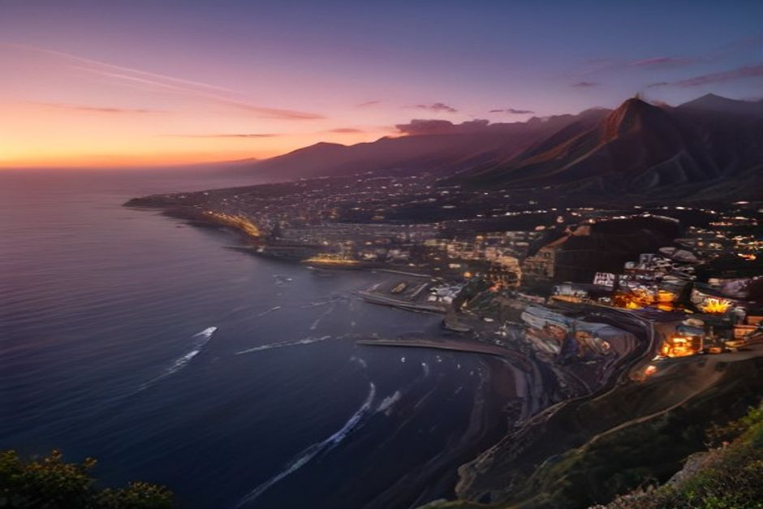
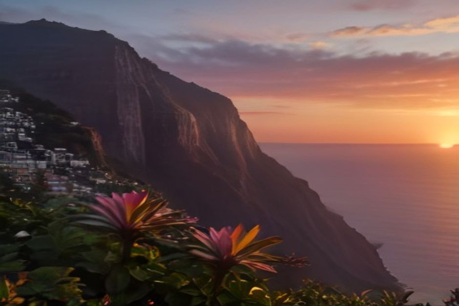

Madeira's sunsets are dramatic because of the clouds, not despite them — low Atlantic banks catch and hold colour long after a clear sky would have faded. Here are the ten places on the island that actually earn a spot at that hour, ranked by what they're worth.
1. Ponta do Pargo lighthouse
Ponta do Pargo is the last place in Madeira to lose the sun, since it sits at the island's westernmost point. The clifftop lighthouse gives a completely open horizon with nothing between you and the Atlantic — the trade-off is the roughly hour-long drive from Funchal, which keeps it far quieter than the south-coast spots.

2. Câmara de Lobos harbour
The old fishing harbour turns the whole scene into a postcard: brightly painted boats, whitewashed houses stacked up the hillside, and Cabo Girão's cliff face catching the last light behind them. It's also the first stop on most Chifbay routes out of Funchal, so the light here is familiar to anyone who's done the coast by boat.
3. Cabo Girão skywalk
Europe's highest sea cliff faces almost due west, and the glass-floored skywalk puts you 580 metres above the water with an uninterrupted view out to sea. It gets busy in summer, so arrive 20–30 minutes before sunset to find parking and a spot at the railing.
4. Ribeira Brava seafront
The pebble beach and promenade below the São Bento fort face open water, with the silhouette of the old fort tower framing the shot as the sky turns. It's a working village stop rather than a tourist viewpoint, which keeps it low-key even in high season.
5. Ponta do Sol pier
Ponta do Sol translates as "point of the sun," and the small pier at the harbour mouth genuinely earns the name — the sun drops almost straight into the sea from here, with no headland in the way. It's one of the sunniest villages on the island, which is exactly why it carries the name.
6. Calheta beach
Calheta's imported golden sand faces further west and slightly south than most of the coast, which means the sun sits visibly lower for longer before it actually touches the horizon. It's a genuine beach rather than a rocky viewpoint, so it's the pick if you want to be in the water right up until golden hour.
7. Miradouro do Pináculo, Funchal
This hillside terrace above Funchal looks straight down the bay, with the whole city, the marina and the cruise terminal laid out below the colour. It's the easiest spot on this list to reach without a car — a short taxi from the centre — which makes it the practical choice on an evening you haven't planned around.
8. Praia Formosa, Funchal
Funchal's closest beach to the centre faces west along the bay, so the sun sets over open water rather than behind the hills that block much of the city centre. It fills up with locals after work in summer, which is part of the appeal — this is where Funchal itself watches the sunset.
9. Avenida do Mar, Zona Velha
The palm-lined seafront promenade through Funchal's old town catches the sky turning gold behind the harbour, with restaurant terraces spilling onto the pavement as the light fades. It's the spot for pairing the view with dinner rather than driving somewhere quieter afterwards.

10. From the water, on a private boat
Every spot above shares the same limit: a fixed position on land, with cliffs, rooftops or trees eventually cutting into the frame. From the water you get an unbroken sea horizon in every direction, the colour reflecting back off the surface, and a boat that can reposition in the final minutes to keep both the sun and the coastline in view. It's the whole idea behind Chifbay's Sunset Trip out of Funchal — two hours turning at Cabo Girão, or two and a half turning further along the coast at Ribeira Brava, with the water too cold to swim by that hour but the light doing all the work instead.
On land you pick a spot and wait for the sun to come to you. On a boat, you follow the light instead.
Wherever you end up, the twenty minutes before and after the sun actually touches the horizon are the ones worth being in position for — arrive right at sunset and you'll miss the best of it either way.